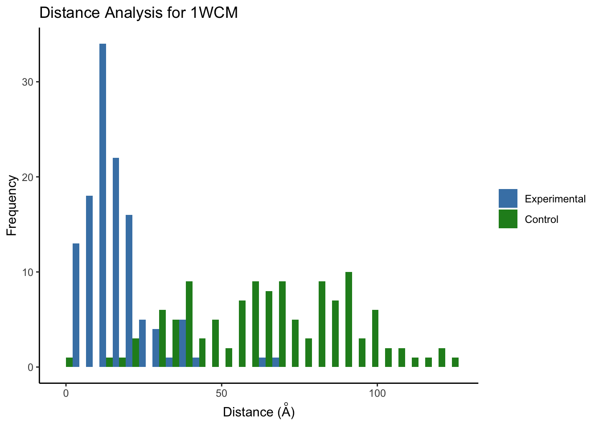

Benchmarking: Protein-protein interactions of RNA polymerase II–TFIIF complex (Chen et. al 2009)
Emma Gail
2019-09-10
Introduction
This tutorial will show you how to use the ppi subset of crisscrosslinker functions in the context of the yeast dataset from the paper Architecture of the RNA polymerase II–TFIIF complex revealed by cross-linking and mass spectrometry.
This tutorial will cover the basics including:
- Loading and combining datasets
- Sequence alignment to PDB structures
- Visualization using xiNET and PyMOL
Install crisscrosslinkeR
If you have not done so already, please install crisscrosslinkeR:
library(devtools)
install_github('egmg726/crisscrosslinker')Load Libraries
First, load the crisscrosslinker package into your R session.
library(XML)
library(RCurl)
library(ggplot2)
library(bio3d)
library(Biostrings)
library(seqinr)
library(RColorBrewer)
library(openxlsx)
library(viridis)
library(stringr)
library(svglite)
library(jsonlite)
library(crisscrosslinker)
library(httr)
library(reshape2)Download Data from PRIDE (Optional)
Many of the publically available mass spectrometry datasets are available from PRIDE. You can download mass spectrometry .raw files from here and then process it for crisscrosslinker using the open-access software pLink.
See the prideR package if you want to search through the accession numbers using your R console.
Load Data
You will then need to load the data into your R session.
The data used for this tutorial was processed using pLink2. crisscrosslinker is designed to handle output from both versions of pLink (1 and 2). At this time, this is the only type of data that will be read by the program.
The uploaded .raw files to PRIDE can be accessed here. The plink2-processed data and its associated FASTA file will be used for input. All of these files are available for download via crisscrosslinkeR.
You can access the plink2-processed data using the following code:
#Get the file path for the files needed
file_path <- system.file("extdata/RNAPolII_ppi",package = 'crisscrosslinker',mustWork = TRUE)
#Names of files used for the experiment. All experiment files must be within the same list for ppi.loadData()
file_names <- c('Sample_Cross-linked_peptides.csv','Sample_loop-linked_peptides.csv')
#Read FASTA file used for analysis (should be the same one used for )
fasta_file <- seqinr::read.fasta(paste0(file_path,'/Sample.fasta'))
ppi.data <- ppi.loadData(file_names,fasta_file,file_directory = file_path)Currently, the program assumes all files used for the experiments are within the same directory and will automatically get the current working directory using getwd() or using the file_directory variable within ppi.loadData.
Combine the Data
Once the data has been loaded from the files into your R envionment, the ppi.combineData function will create a table to show the frequency of binding sites within your loaded datasets.
xlink.df <- ppi.combineData(ppi.data,fasta_file)This will create a table with the calculated frequencies. We can then check out how the data looks:
head(xlink.df)## seq
## 1 AAAALGLFNEEGLESTGEDFLKK(22)-GFPGPPGMKGPAGMPGFPGMK(9)
## 2 ADPTTTVNAKVGAENDGDSSLFLR(10)-FLSGSWDKR(8)
## 3 ADPVALYLGLKR(11)-LSSDEKR(6)
## 4 AEICLKR(6)-TVTAKVR(5)
## 5 AGDIQLQYGWKVER(11)-GNLMGKR(6)
## 6 AGDIQLQYGWKVER(11)-VGQQYSSAPLR(1)
## pro
## 1 sp|P32494|NGG1_YEAST(258)-gi|CON_IPI00731432.2|SWISS-PROT:P04258(251)
## 2 sp|P35177|SPT7_YEAST(1284)-sp|P38915|SPT8_YEAST(329)
## 3 sp|P20434|RPAB1_YEAST(191)-sp|P20434|RPAB1_YEAST(161)
## 4 sp|P35177|SPT7_YEAST(751)-sp|P35177|SPT7_YEAST(743)
## 5 sp|P04050|RPB1_YEAST(431)-sp|P04050|RPB1_YEAST(343)
## 6 sp|P04050|RPB1_YEAST(431)-sp|P04050|RPB1_YEAST(2)
## freq freq_color files pro_pos1 pro_pos2
## 1 1 red Sample_Cross-linked_peptides.csv 258 251
## 2 1 red Sample_Cross-linked_peptides.csv 1284 329
## 3 1 red Sample_Cross-linked_peptides.csv 191 161
## 4 1 red Sample_Cross-linked_peptides.csv 751 743
## 5 1 red Sample_Cross-linked_peptides.csv 431 343
## 6 1 red Sample_Cross-linked_peptides.csv 431 2
## pro_name1 pro_name2
## 1 sp|P32494|NGG1_YEAST gi|CON_IPI00731432.2|SWISS-PROT:P04258
## 2 sp|P35177|SPT7_YEAST sp|P38915|SPT8_YEAST
## 3 sp|P20434|RPAB1_YEAST sp|P20434|RPAB1_YEAST
## 4 sp|P35177|SPT7_YEAST sp|P35177|SPT7_YEAST
## 5 sp|P04050|RPB1_YEAST sp|P04050|RPB1_YEAST
## 6 sp|P04050|RPB1_YEAST sp|P04050|RPB1_YEAST
## pep_seq1 pep_seq2 pep_pos1 pep_pos2
## 1 AAAALGLFNEEGLESTGEDFLKK GFPGPPGMKGPAGMPGFPGMK 22 9
## 2 ADPTTTVNAKVGAENDGDSSLFLR FLSGSWDKR 10 8
## 3 ADPVALYLGLKR LSSDEKR 11 6
## 4 AEICLKR TVTAKVR 6 5
## 5 AGDIQLQYGWKVER GNLMGKR 11 6
## 6 AGDIQLQYGWKVER VGQQYSSAPLR 11 1
## score
## 1 2.609783e-01
## 2 6.387972e-03
## 3 1.722353e-14
## 4 5.247864e-12
## 5 3.948047e-12
## 6 5.510616e-15Visualize Results with xiNET
In this particular dataset, there are contaminants we do not want to visualize. We will first filter them out.
xlink.df.filtered <- xlink.df[(!grepl('CON',xlink.df$pro)),]From here, we can create a file that can be used as input for xiNET and its successor, xiVIEW
xlink.df.xinet <- ppi.xinet(xlink.df.filtered,xlink_viewer_csv_file_name='xinet_input.csv')
head(xlink.df.xinet)## PepPos1 PepPos2 PepSeq1 PepSeq2 LinkPos1 LinkPos2
## 1 1275 322 ADPTTTVNAKVGAENDGDSSLFLR FLSGSWDKR 10 8
## 2 181 156 ADPVALYLGLKR LSSDEKR 11 6
## 3 746 739 AEICLKR TVTAKVR 6 5
## 4 421 338 AGDIQLQYGWKVER GNLMGKR 11 6
## 5 421 2 AGDIQLQYGWKVER VGQQYSSAPLR 11 1
## 6 48 29 AKIGGLNDPR AISVAKIR 2 6
## Protein1 Protein2 Score
## 1 sp|P35177|SPT7_YEAST sp|P38915|SPT8_YEAST 6.387972e-03
## 2 sp|P20434|RPAB1_YEAST sp|P20434|RPAB1_YEAST 1.722353e-14
## 3 sp|P35177|SPT7_YEAST sp|P35177|SPT7_YEAST 5.247864e-12
## 4 sp|P04050|RPB1_YEAST sp|P04050|RPB1_YEAST 3.948047e-12
## 5 sp|P04050|RPB1_YEAST sp|P04050|RPB1_YEAST 5.510616e-15
## 6 sp|P04050|RPB1_YEAST sp|P04050|RPB1_YEAST 7.147918e-12This file can be directly inputted into xiNET along with the accompanying FASTA file.
This allows you to visualize your data in a web-based platform after appropriate filtration and data aggregation steps have been performed.

Match PDB Structures to your Crosslinked Sites
For this dataset, we want to map all of the proteins within the same PDB file. We have chosen 1WCM for this purpose since it used in the publication as well.
ppi.alignIDs <- read.csv(paste0(file_path,'/Sample_alignIDs.csv'))
ppi.alignIDs## ProteinName UniProtID PDB
## 1 sp|P20434|RPAB1_YEAST P20434 1WCM_E
## 2 sp|P04050|RPB1_YEAST P04050 1WCM_A
## 3 sp|P38902|RPB11_YEAST P38902 1WCM_K
## 4 sp|P40422|RPAB4_YEAST P40422 1WCM_L
## 5 sp|P08518|RPB2_YEAST P08518 1WCM_B
## 6 sp|P16370|RPB3_YEAST P16370 1WCM_C
## 7 sp|P20433|RPB4_YEAST P20433 1WCM_D
## 8 sp|P20435|RPAB2_YEAST P20435 1WCM_F
## 9 sp|P34087|RPB7_YEAST P34087 1WCM_G
## 10 sp|P22139|RPAB5_YEAST P22139 1WCM_J
## 11 sp|P27999|RPB9_YEAST P27999 1WCM_IWe are going to further filter our dataset to only those proteins which show up in this particular dataframe.
xlink.df.filtered2 <- xlink.df.filtered[xlink.df.filtered$pro_name1 %in% ppi.alignIDs$ProteinName,]
xlink.df.filtered2 <- xlink.df.filtered2[xlink.df.filtered2$pro_name2 %in% ppi.alignIDs$ProteinName,]##Note about Sequence Alignments
Sequence alignments are done using the PDB mapping function through RCSB to ensure accuracy.
Since many PDB files contain large gaps, if your FASTA file is not the original UniProt sequence but is similar in sequence, doing a direct sequence alignment may not produce the best results.It is often better to align it to the canonical UniProt sequence and then use the RCSB API to ensure that the sequences are being mapped accurately based on their database.
Alignment to PDB
xlink.df.pdb <- ppi.matchPDB2(xlink.df.filtered2,fasta_file = fasta_file, alignIDs = ppi.alignIDs,uniprot2pdb = FALSE)As you can see, 3 additional columns have been added:
pdb1Location in PDB file of first XL sitepdb2Location in PDB file of second XL sitedistDistance between the two XL sites if within the same PDB file. If one is not within any PDB file or if they are within two different PDB files, this will show up asNA.
We can use the dist column to look at the distibution of distances within our dataset and see if they’re reasonable given the crosslinker used (in this case BS3).
qplot(na.omit(xlink.df.pdb$dist),xlab='Distance',ylab='Frequency')However, we may want see if this distribution is random since it somewhat resembles a normal distribution. We can check this by using the function ppi.distAnalysis.
set.seed(224)
ppi.distAnalysis(xlink.df.pdb = xlink.df.pdb)## Note: Accessing on-line PDB file
## HEADER TRANSCRIPTION 17-NOV-04 1WCMBased on this plot, it appears that the experimental distances are not random and skew right, consistent with a short crosslinker like BS3 which is approximately 11.3 Angstroms.
We can further customize the plots if we want certain aesthetics, such as for a publication. This can be done by turning off the plot variable within the ppi.distAnalysis function.
set.seed(224)
dist.hist.df.mega <- ppi.distAnalysis(xlink.df.pdb = xlink.df.pdb, plot=FALSE)## Note: Accessing on-line PDB file
## HEADER TRANSCRIPTION 17-NOV-04 1WCMdist.hist.df.mega is a list containing a data.frame for each PDB file that was matched to the sequences chosen.
We can then use an outside color palette that we want to use for our histogram. In this case, we will test out a color palette from the wesanderson library.
Since we only have one PDB structure, 1WCM, we can just select it from the list to use.
library(wesanderson)
ggplot(melt(dist.hist.df.mega[['1WCM']]), aes(value, fill = variable)) +
geom_histogram(position = "dodge") +
labs(x=expression(paste('Distance (',ring(A),')')),y='Frequency',title='Distance Analysis for 1WCM') +
scale_fill_manual(values=wes_palette(n=2, name="GrandBudapest2")) +
theme_classic() + theme(legend.title = element_blank())
Note: the control distribution will look slightly different each time it is run due to the random sampling of the lysines unless set.seed is set before ppi.distAnalysis.
Visualizing using PyMOL (3D)
First, we will omit all rows which contain an NA, which do not have a valid distance in them.
xlink.df.pdb <- na.omit(xlink.df.pdb)Using Default Settings
We can first check how the sites look on a structure by writing a file that can be read by PyMOL.
ppi.pymol(xlink.df = xlink.df.pdb, write_file = TRUE,file.name='xlink_default.pml')
Using Custom Colors
If we do not want to use the colors automatically generated by ppi.combineData, we can customize this to better fit our desired aesthetic.
ppi.pymol(xlink.df = xlink.df.pdb, colors = '#f38bd1',color_by = 'freq',write_file = TRUE,file.name='xlink_pink.pml')
Coloring by Distance
We can also color the crosslinking sites by distance.
ppi.pymol(xlink.df = xlink.df.pdb, color_by='dist', write_file = TRUE,file.name='xlink_dist.pml')
We are currently working on adding more customization options within the ppi.pymol function for coloring by dist. However, you can also color by distance yourself by using the following code:
dist.colors <- c("blue", "green", "orange","red") #colors desired for each of the intervals
dist.int <- c(-Inf,10,15,20,Inf) #intervals for each of the different colors
xlink.df.pdb$freq_color <- cut(xlink.df.pdb$dist, dist.int, dist.colors)
head(xlink.df.pdb[c('freq_color','dist')])## freq_color dist
## 3 green 13.31661
## 5 red 26.13151
## 6 orange 15.94826
## 7 green 13.67619
## 8 red 24.95538
## 9 orange 16.43422Then use the ppi.pymol function with default settings to produce your .pml file.
Session Info
devtools::session_info()## ─ Session info ──────────────────────────────────────────────────────────
## setting value
## version R version 3.5.1 (2018-07-02)
## os macOS 10.14.3
## system x86_64, darwin15.6.0
## ui RStudio
## language (EN)
## collate en_US.UTF-8
## ctype en_US.UTF-8
## tz Australia/Melbourne
## date 2019-09-10
##
## ─ Packages ──────────────────────────────────────────────────────────────
## package * version date lib
## ade4 1.7-13 2018-08-31 [1]
## assertthat 0.2.1 2019-03-21 [1]
## backports 1.1.4 2019-04-10 [1]
## bio3d * 2.3-4 2018-04-03 [1]
## BiocGenerics * 0.28.0 2018-10-30 [1]
## Biostrings * 2.50.2 2019-01-03 [1]
## bitops * 1.0-6 2013-08-17 [1]
## callr 3.3.1 2019-07-18 [1]
## cli 1.1.0 2019-03-19 [1]
## codetools 0.2-16 2018-12-24 [1]
## colorspace 1.4-1 2019-03-18 [1]
## crayon 1.3.4 2017-09-16 [1]
## crisscrosslinker * 0.9 2019-09-03 [1]
## curl * 4.0 2019-07-22 [1]
## desc 1.2.0 2018-05-01 [1]
## devtools * 2.1.0 2019-07-06 [1]
## digest 0.6.20 2019-07-04 [1]
## dplyr 0.8.3 2019-07-04 [1]
## evaluate 0.14 2019-05-28 [1]
## fs 1.3.1 2019-05-06 [1]
## gdtools * 0.1.9 2019-06-18 [1]
## ggplot2 * 3.2.1 2019-08-10 [1]
## glue 1.3.1 2019-03-12 [1]
## gridExtra 2.3 2017-09-09 [1]
## gtable 0.3.0 2019-03-25 [1]
## highr 0.8 2019-03-20 [1]
## htmltools 0.3.6 2017-04-28 [1]
## httr * 1.4.1 2019-08-05 [1]
## IRanges * 2.16.0 2018-10-30 [1]
## jsonlite * 1.6 2018-12-07 [1]
## knitr 1.24 2019-08-08 [1]
## labeling 0.3 2014-08-23 [1]
## lattice 0.20-38 2018-11-04 [1]
## lava 1.6.6 2019-08-01 [1]
## lazyeval 0.2.2 2019-03-15 [1]
## magrittr 1.5 2014-11-22 [1]
## MASS 7.3-51.4 2019-03-31 [1]
## Matrix 1.2-17 2019-03-22 [1]
## memoise 1.1.0 2017-04-21 [1]
## munsell 0.5.0 2018-06-12 [1]
## openxlsx * 4.1.0.1 2019-05-28 [1]
## pillar 1.4.2 2019-06-29 [1]
## pkgbuild 1.0.5 2019-08-26 [1]
## pkgconfig 2.0.2 2018-08-16 [1]
## pkgload 1.0.2 2018-10-29 [1]
## plyr 1.8.4 2016-06-08 [1]
## prettyunits 1.0.2 2015-07-13 [1]
## processx 3.4.1 2019-07-18 [1]
## prodlim 2018.04.18 2018-04-18 [1]
## ps 1.3.0 2018-12-21 [1]
## purrr 0.3.2 2019-03-15 [1]
## R6 2.4.0 2019-02-14 [1]
## RColorBrewer * 1.1-2 2014-12-07 [1]
## Rcpp 1.0.2 2019-07-25 [1]
## RCurl * 1.95-4.12 2019-03-04 [1]
## remotes 2.1.0 2019-06-24 [1]
## reshape2 * 1.4.3 2017-12-11 [1]
## rlang 0.4.0 2019-06-25 [1]
## rmarkdown 1.15 2019-08-21 [1]
## rprojroot 1.3-2 2018-01-03 [1]
## rstudioapi 0.10 2019-03-19 [1]
## S4Vectors * 0.20.1 2018-11-09 [1]
## scales 1.0.0 2018-08-09 [1]
## seqinr * 3.4-5 2017-08-01 [1]
## sessioninfo 1.1.1 2018-11-05 [1]
## stringi 1.4.3 2019-03-12 [1]
## stringr * 1.4.0 2019-02-10 [1]
## survival 2.44-1.1 2019-04-01 [1]
## svglite * 1.2.2 2019-05-17 [1]
## testthat 2.2.1 2019-07-25 [1]
## tibble 2.1.3 2019-06-06 [1]
## tidyselect 0.2.5 2018-10-11 [1]
## tufte * 0.5 2019-05-12 [1]
## usethis * 1.5.1 2019-07-04 [1]
## viridis * 0.5.1 2018-03-29 [1]
## viridisLite * 0.3.0 2018-02-01 [1]
## wesanderson * 0.3.6 2018-04-20 [1]
## withr 2.1.2 2018-03-15 [1]
## xfun 0.9 2019-08-21 [1]
## XML * 3.98-1.20 2019-06-06 [1]
## xml2 1.2.2 2019-08-09 [1]
## XVector * 0.22.0 2018-10-30 [1]
## yaml 2.2.0 2018-07-25 [1]
## zip 2.0.4 2019-09-01 [1]
## zlibbioc 1.28.0 2018-10-30 [1]
## source
## CRAN (R 3.5.0)
## CRAN (R 3.5.2)
## CRAN (R 3.5.2)
## CRAN (R 3.5.0)
## Bioconductor
## Bioconductor
## CRAN (R 3.5.0)
## CRAN (R 3.5.2)
## CRAN (R 3.5.2)
## CRAN (R 3.5.2)
## CRAN (R 3.5.2)
## CRAN (R 3.5.0)
## Github (egmg726/crisscrosslinker@2238988)
## CRAN (R 3.5.2)
## CRAN (R 3.5.0)
## CRAN (R 3.5.1)
## CRAN (R 3.5.2)
## CRAN (R 3.5.2)
## CRAN (R 3.5.2)
## CRAN (R 3.5.2)
## CRAN (R 3.5.2)
## CRAN (R 3.5.2)
## CRAN (R 3.5.2)
## CRAN (R 3.5.0)
## CRAN (R 3.5.2)
## CRAN (R 3.5.2)
## CRAN (R 3.5.0)
## CRAN (R 3.5.2)
## Bioconductor
## CRAN (R 3.5.0)
## CRAN (R 3.5.2)
## CRAN (R 3.5.0)
## CRAN (R 3.5.0)
## CRAN (R 3.5.2)
## CRAN (R 3.5.2)
## CRAN (R 3.5.0)
## CRAN (R 3.5.2)
## CRAN (R 3.5.2)
## CRAN (R 3.5.0)
## CRAN (R 3.5.0)
## CRAN (R 3.5.2)
## CRAN (R 3.5.2)
## CRAN (R 3.5.2)
## CRAN (R 3.5.0)
## CRAN (R 3.5.0)
## CRAN (R 3.5.0)
## CRAN (R 3.5.0)
## CRAN (R 3.5.2)
## CRAN (R 3.5.0)
## CRAN (R 3.5.0)
## CRAN (R 3.5.2)
## CRAN (R 3.5.2)
## CRAN (R 3.5.0)
## CRAN (R 3.5.2)
## CRAN (R 3.5.2)
## CRAN (R 3.5.2)
## CRAN (R 3.5.0)
## CRAN (R 3.5.2)
## CRAN (R 3.5.2)
## CRAN (R 3.5.0)
## CRAN (R 3.5.2)
## Bioconductor
## CRAN (R 3.5.0)
## CRAN (R 3.5.0)
## CRAN (R 3.5.0)
## CRAN (R 3.5.2)
## CRAN (R 3.5.2)
## CRAN (R 3.5.2)
## CRAN (R 3.5.2)
## CRAN (R 3.5.2)
## CRAN (R 3.5.2)
## CRAN (R 3.5.0)
## CRAN (R 3.5.2)
## CRAN (R 3.5.2)
## CRAN (R 3.5.0)
## CRAN (R 3.5.0)
## CRAN (R 3.5.0)
## CRAN (R 3.5.0)
## CRAN (R 3.5.2)
## CRAN (R 3.5.2)
## CRAN (R 3.5.2)
## Bioconductor
## CRAN (R 3.5.0)
## CRAN (R 3.5.2)
## Bioconductor
##
## [1] /Library/Frameworks/R.framework/Versions/3.5/Resources/library